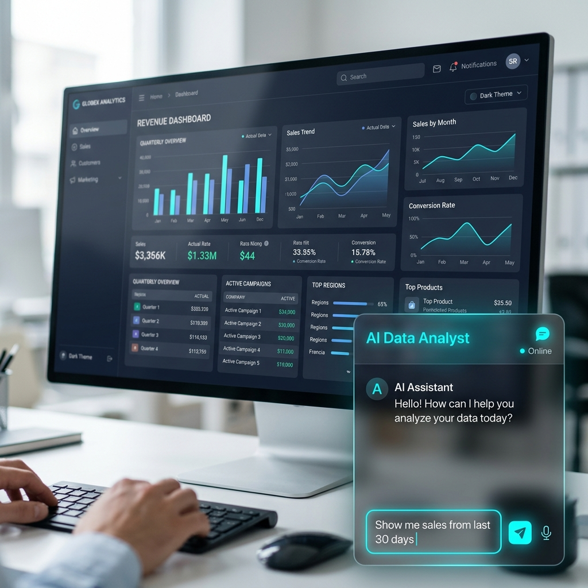
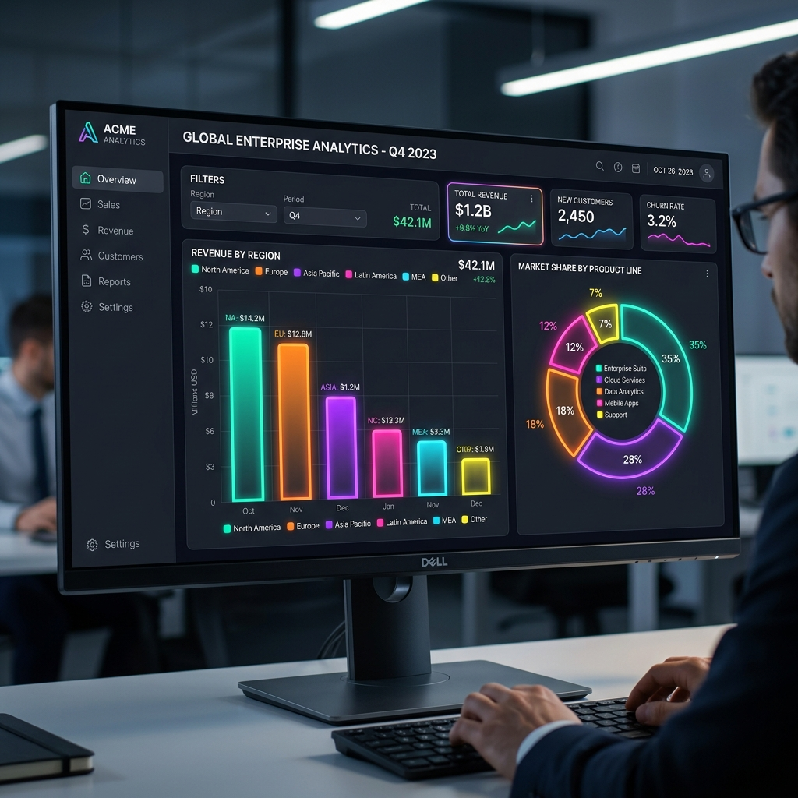

Stop struggling with complex filters and "Group By" rules. Our powerful Natural Language query bar seamlessly integrates into your Odoo backend. Simply type what you want to see, and watch the AI instantly build the perfect report.

Sleek, global floating AI Chat Widget accessible from anywhere in Odoo.
Once the AI generates your report, it renders a stunning chart (Bar, Pie, Line) or a Pivot Table. You can easily pin these dynamic charts directly to your native Odoo Dashboards, allowing executives to build customized, real-time KPI overviews in seconds.

Premium charting and native dashboard integration.